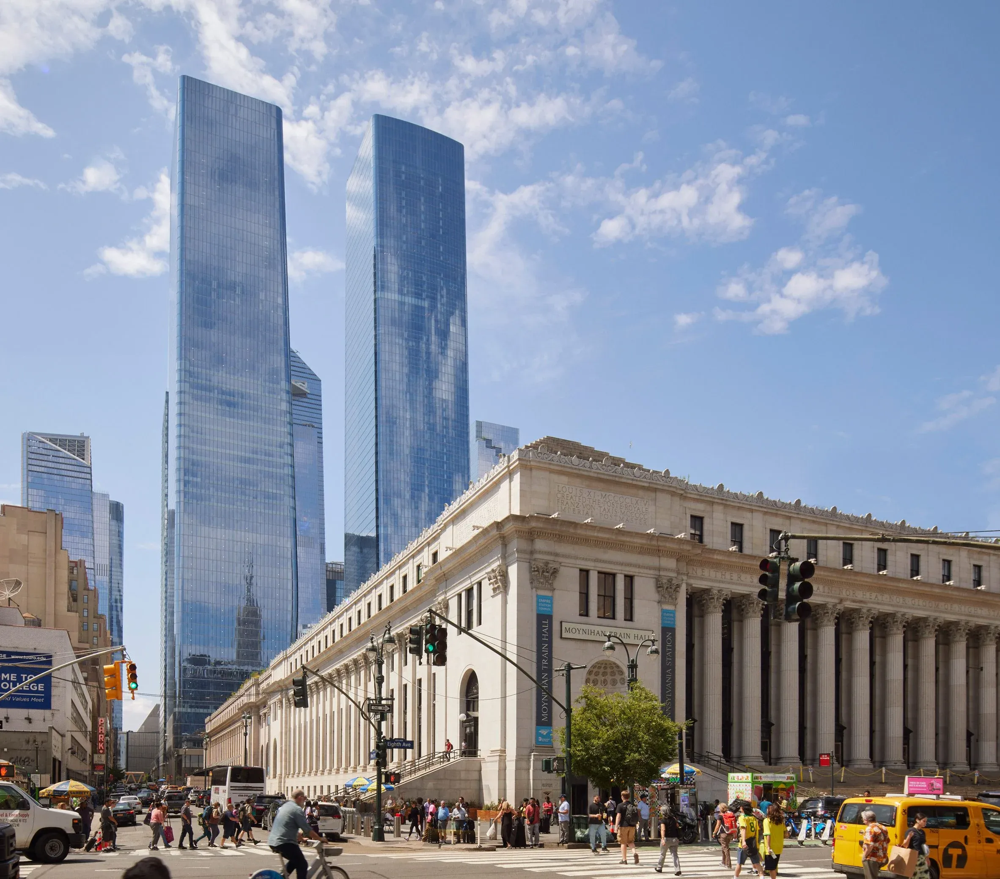
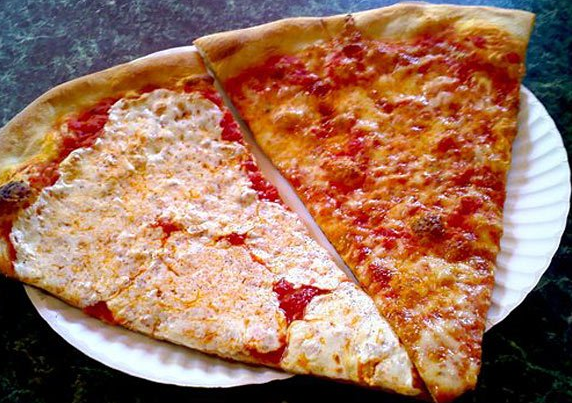
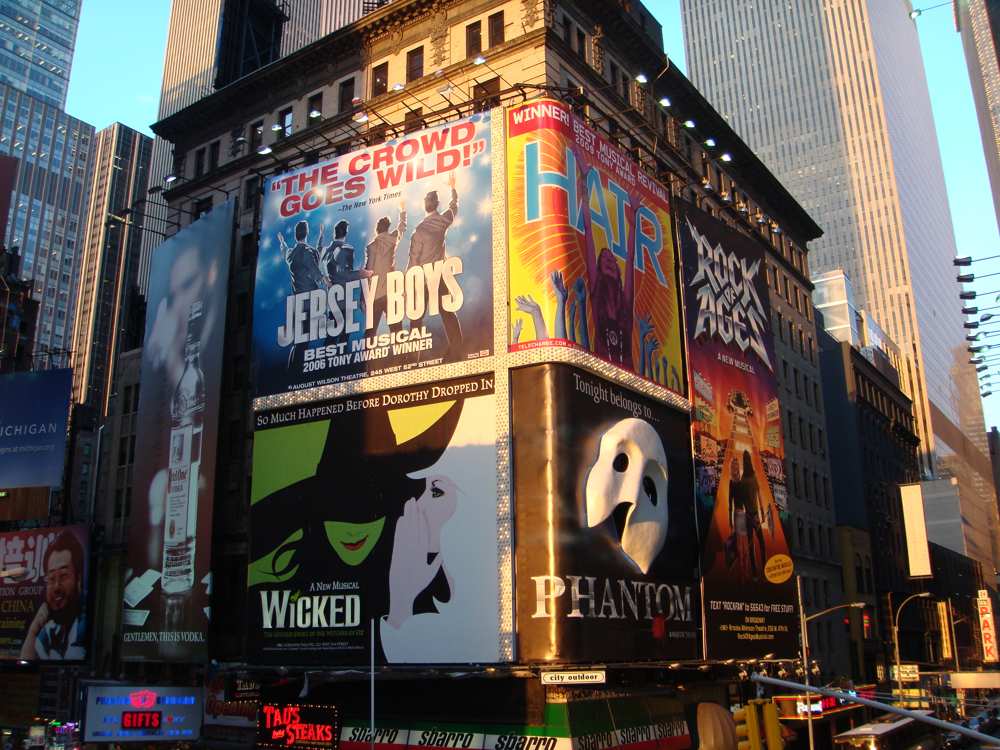
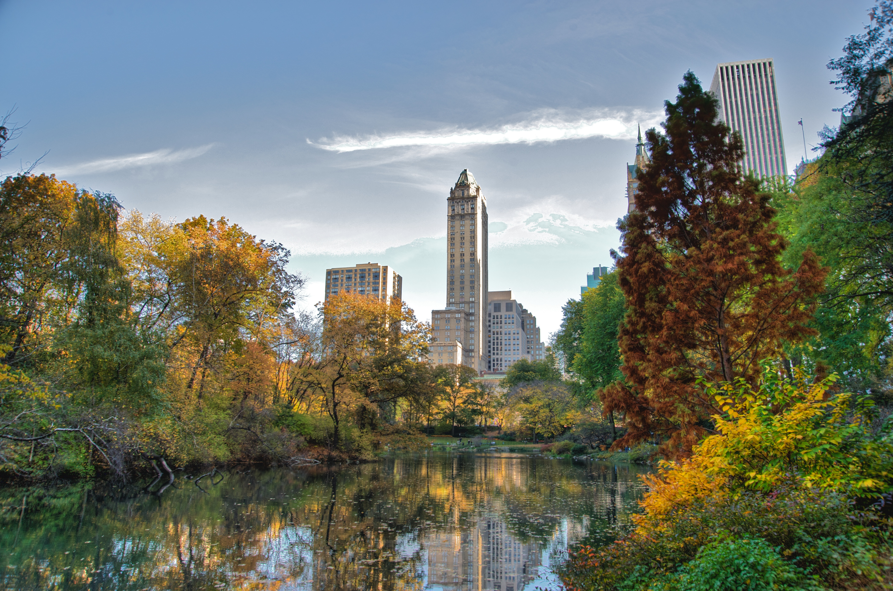

Визначні пам'ятки
Статуя Свободи, Таймс-сквер і хмарочоси Мангеттена формують впізнаваний образ Нью-Йорка.

Кухня та гастрономія
У місті легко знайти кухні різних народів, а нью-йоркська піца стала справжньою місцевою класикою.

Культура та традиції
Бродвейські театри, музеї та джазові клуби створюють насичене культурне життя міста.

Особисті історії
Після гомону вулиць особливо приємно було відпочити серед зелених алей Центрального парку.
